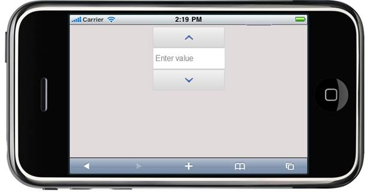

In the Getting Started section, we discussed how to create a Mobile MVC application and how to add Tools package to an application. This section guides you to add Percent textbox control to an application.
To add the Percent textbox control to an application:
1. In View, invoke the percent textbox helper with the control ID as first argument.
|
[ASPX] <% { Html.MobSyncfusion().PercentTextbox("WebsitePercent").WaterMarkText("Enter value") .Render(); }%> [Razor] @{ Html.MobSyncfusion().PercentTextbox("WebsitePercent").WaterMarkText("Enter value") .Render(); } |
2. Run the application.
The output is shown in the following screenshot:

Figure 240 Percent textbox
A sample which demonstrates a basic Percent textbox control can be downloaded from the following link:
 Note: The version number for the assemblies has
been set to 10.1.0.43 in the Web.config file of the attached sample. Change the
version number to the appropriate version in the Web-2008.config or
Web-2010.config files (available in root directory) and those will automatically
be updated in the Web.config file.
Note: The version number for the assemblies has
been set to 10.1.0.43 in the Web.config file of the attached sample. Change the
version number to the appropriate version in the Web-2008.config or
Web-2010.config files (available in root directory) and those will automatically
be updated in the Web.config file.